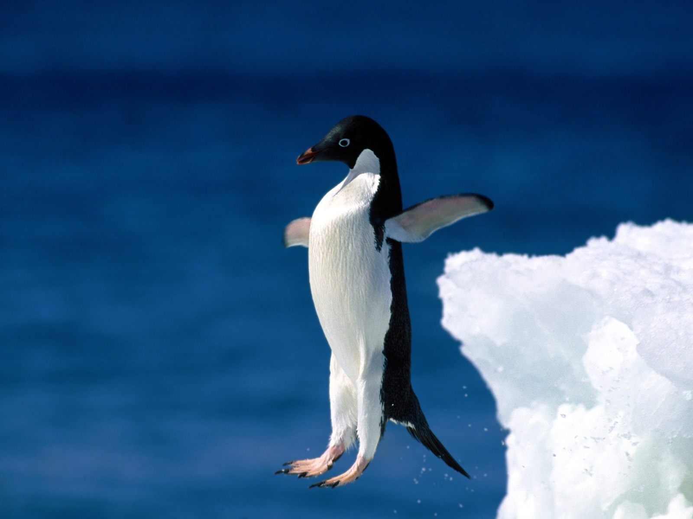

Penguins are a species of flightless aquatic birds that live south of the equator with the exception of one species that lives on the Galapagos Island. Having adapted for the water instead of the air, the penguin’s wings have evolved from wings to flippers; useful for propelling the penguin through the water. For its diet, penguins feed primarily on fish, krill, squid, that they hunt underwater. Penguins spend half of their lives on land and half of life in the water. The penguin is primarily black and white, but many species, such as the Emperor Penguin, have accents of colorful plumage on their faces and necks.
